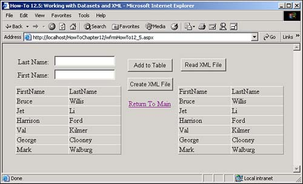

Sometimes, I have to pull XML documents into datasets and vice versa. How do I accomplish this using .NET?
.NET has developed a number of ways to utilize datasets and XML together. The simplest use is pushing data between the two. To do this, you have the two methods belonging to the DataSet object: ReadXML and WriteXML. For both of these methods, you need to provide a filename to read or write the XML document to.
To demonstrate how to take advantage of these methods, I created a form that looks similar to the other How-Tos showing how to write XML documents. However, for this example, I also added another button and data grid that will show the data after reading from the XML document.
Open and run the Visual Basic .NET-Chapter 12 solution. From the main Web page, click on the hyperlink with the caption How-To 12.5: Working with Datasets and XML. As with How-To 12.1, when the page loads, you can enter a few names. Enter the last and first names, and then click the button labeled Add to DataTable. When you have added a few names, click the button labeled Create XML File. Using Explorer, open the file created in C:\ called test.xml. If you click Read XML File, you will see the same data because it was read from text.xml (see Figure 12.5).
Create a Web Form. Then place the Labels, TextBoxes, Buttons, and DataGrid objects as seen in Figure 12.5 on the form with the properties set as in Table 12.9.
|
Object |
Property |
Setting |
|---|---|---|
|
Label |
Text |
Last Name |
|
TextBox |
ID |
txtLastName |
|
Label |
Text |
First Name |
|
TextBox |
ID |
txtFirstName |
|
Button |
ID |
btnAdd |
|
Text |
Add to DataTable |
|
|
Button |
ID |
btnCreateXMLFile |
|
Text |
Create XML File |
|
|
DataGrid |
ID |
dgDataToWrite |
|
Button |
ID |
btnReadFile |
|
DataGrid |
ID |
dgResultsFromXML |
|
HyperLink |
ID |
hplReturnToMain |
|
NavigateURL |
wfrmMain.aspx |
Add the following line to the code module of the form. Then place it under the line that reads Web Form Designer Generated Code.
Dim mdtData As New DataTable() Dim mdsData As New DataSet()
Add the code in Listing 12.11 to the Load event of the page. If the data table has not been saved to the Session object, then it is created from scratch by first creating the data columns and then adding them to the data table. The DataTable object is then saved to the Session object with the name MyDataTable. A DataSet object is also created because some of the XML methods must be used from the DataSet object, rather than at the DataTable level. If the Session objects entry already exists, it is assigned back to the module variable mdtData and mdsData. Last, the data table is bound to the DataGrid object by calling the BindTheGrid routine, which is described in the next step.
Private Sub Page_Load(ByVal sender As System.Object, _
ByVal e As System.EventArgs) Handles MyBase.Load
'Put user code to initialize the page here
If (Session("MyDataTable") Is Nothing) Then
Dim dcFirstName As New DataColumn()
dcFirstName.ColumnName = "FirstName"
dcFirstName.Caption = "First Name"
mdtData.Columns.Add(dcFirstName)
Dim dcLastName As New DataColumn()
dcLastName.ColumnName = "LastName"
dcLastName.Caption = "Last Name"
mdtData.Columns.Add(dcLastName)
mdsData.Tables.Add(mdtData)
Session("MyDataTable") = mdtData
Session("MyDataSet") = mdsData
Else
mdtData = CType(Session("MyDataTable"), DataTable)
End If
BindTheGrid()
End Sub
Create the routine BindTheGrid, shown in Listing 12.12, in the code module for the page.
Sub BindTheGrid()
dgDataToWrite.DataSource = mdtData
dgDataToWrite.DataBind()
End Sub
Add the code in Listing 12.13 to the Click event of the btnAdd button. This routine starts off by calling the NewRow method off the mdtData data table, thus creating a new DataRow object. The two columns in drNew are replaced with the values in txtLastName and txtFirstName. The new row is added to the data table, and the text boxes are cleared. Last, mdtData is rebound to the data grid by calling BindTheGrid.
Private Sub btnAdd_Click(ByVal sender As System.Object, _
ByVal e As System.EventArgs) Handles btnAdd.Click
Dim drNew As DataRow
drNew = mdtData.NewRow()
drNew.Item("LastName") = Me.txtLastName.Text
drNew.Item("FirstName") = Me.txtFirstName.Text
mdtData.Rows.Add(drNew)
Me.txtLastName.Text = ""
Me.txtFirstName.Text = ""
BindTheGrid()
End Sub
Add the code in Listing 12.14 to the event of the btnCreateXMLFile button. After loading the dataset from the Session object, the WriteXML method is invoked to save the data into an XML document.
Private Sub btnCreateXMLFile_Click(ByVal sender As System.Object, _
ByVal e As System.EventArgs) Handles btnCreateXMLFile.Click
mdsData = CType(Session("MyDataset"), DataSet)
mdsData.WriteXml("c:\Test.xml")
End Sub
Add the code in Listing 12.14 to the Click event of the btnReadFile button. Here, the code reads the XML document by using the ReadXML method off the dsXMLData DataSet object and then binds it to a DataGrid object.
Private Sub btnReadFile_Click(ByVal sender As System.Object, _
ByVal e As System.EventArgs) Handles btnReadFile.Click
Dim dsXMLData As DataSet = New DataSet()
dsXMLData.ReadXml("c:\Test.xml")
Me.dgResultsFromXML.DataSource = dsXMLData
Me.dgResultsFromXML.DataBind()
End Sub

As you can see, for both reading and writing XML document from and to datasets, Microsoft has given us some easy commands to accomplish the task. However, remember that you do have the control over the format of the XML document that you have using the other methods, such as using the DOM.